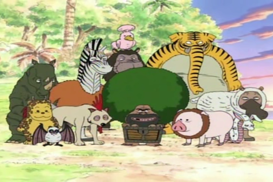
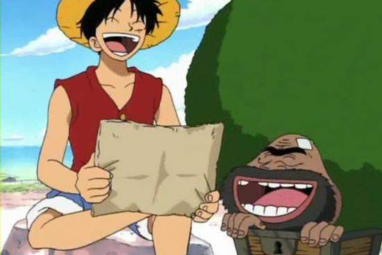
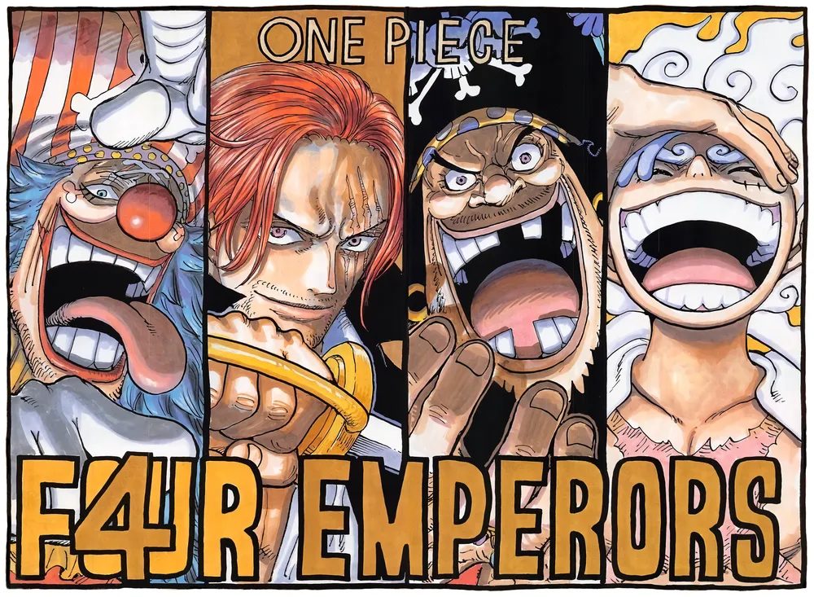
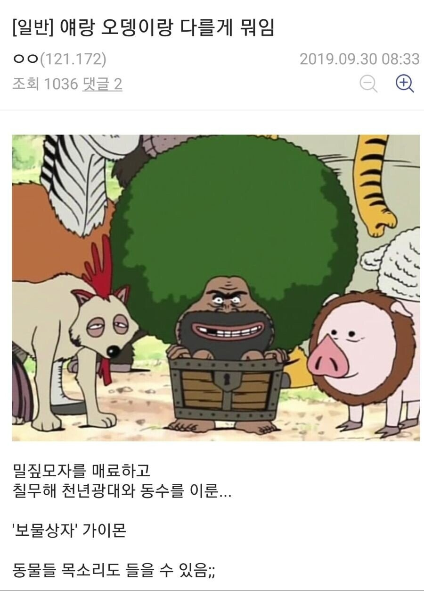

가이몬

보물상자에 몸이 끼여
동물들이랑 같이 섬에서 살면서
수십년간 보물상자를 지켜온 단역 캐릭터로
이후에 자신이 지켜온 보물상자가 사실은 빈 보물상자였다는걸 알았지만
동물들을 지키기 위해 섬에 남기로 결정함

이 과정에서 루피를 만나고 이후에는 버기도 만나는데
마음을 터놓고 친해진 두 사람은 각각 한번씩 가이몬에게 동료가 될 것을 권유함
하지만 가이몬은 자신은 동물들을 지키고 싶다며 동료 제의를 거절함

그리고 다들 알다시피 루피랑 버기는 이후 각각 사황이 됨

사황 둘을 매료하고 동료 제의를 모두 거절한
대 이 몬
밀매버반